Time machine
A take-home activity for after the workshop: look back through your match history and try a different move without changing the original match.
Look at the past
Every commit is a saved snapshot of BOARD.txt. The commit graph draws these snapshots as a line, newest at the top. Open your repository in a Codespace and work in Source Control.
- Switch to your match branch (
match). In the Graph toolbar, click Pull. - In the Source Control view, expand the Graph section. Each dot is one commit.
- Click an older commit. VS Code lists the files it changed.
- Click
BOARD.txtto open the diff. The removed line is the board before that commit, and the added line is the board after it.
On match, click Pull in the Graph toolbar.
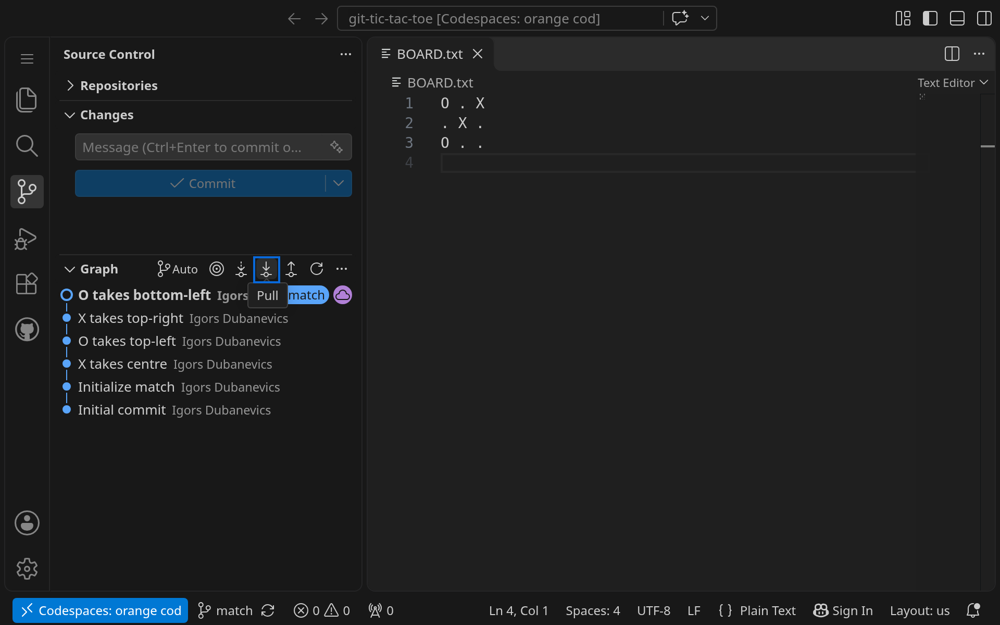
Expand Graph. Each dot is one commit, newest at the top.
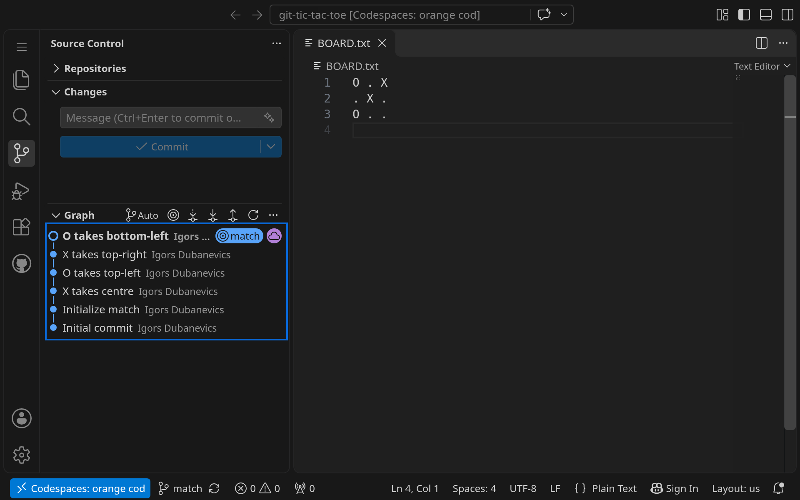
Select an older commit. BOARD.txt is listed under it.
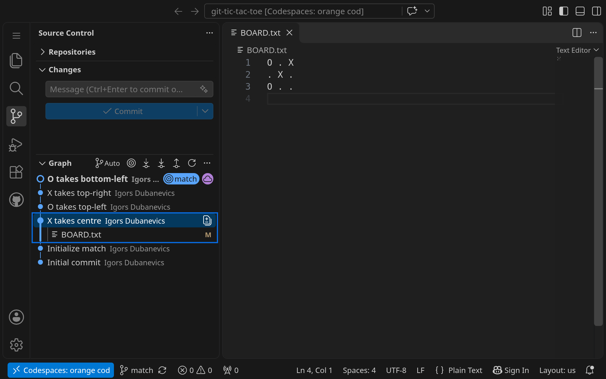
Open the BOARD.txt diff. The removed line is the board before that commit, and the added line is the board after it.
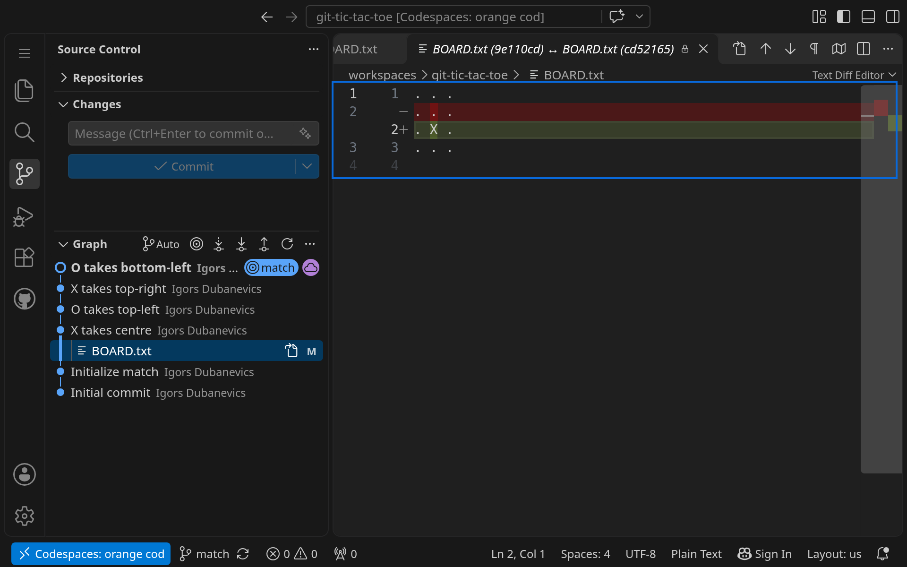
Looking at a diff changes nothing. You can click around freely.
Detached HEAD
HEAD is Git’s name for the commit your files currently show. Normally HEAD follows a branch. If you check out an old commit directly, HEAD is detached: your files show the old board, and the status bar shows a commit code instead of a branch name. This is safe for reading, but a commit made here belongs to no branch and is easy to lose.
The status bar shows a commit code, such as cd521651, instead of a branch name.
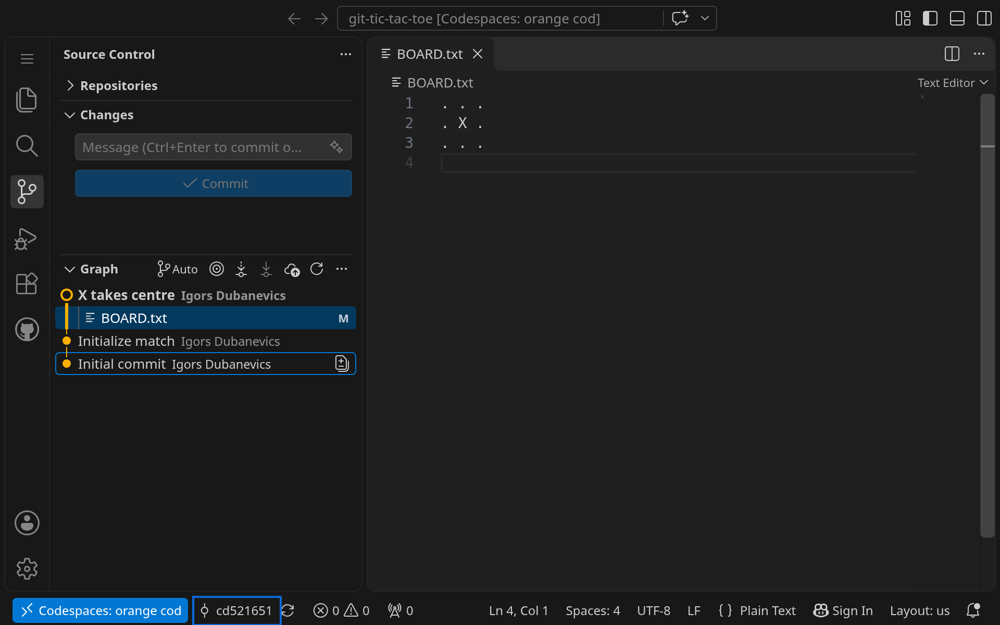
To leave a detached HEAD: click the branch name in the status bar (or the branch picker in Source Control), choose your match branch, and your files return to the latest board. If you have not committed anything, nothing is lost.
Try a what-if
An experiment branch is a new branch that starts from a past commit, so you can play a different move there. Name it so that it does not start with match (for example what-if-01); the Game Wall ignores such branches, so your experiment will not appear as a match.
- In the commit graph, right-click the old commit where you want to change history and choose Create Branch....
- Type a name such as
what-if-01and press Enter. VS Code switches to the new branch. - Open
BOARD.txt, replace one dot with a different legal move, and save. - Check the diff, stage
BOARD.txtwith +, enter a clear message, and click Commit. - Click Publish Branch so your experiment is saved on GitHub.
Right-click an older commit and choose Create Branch....
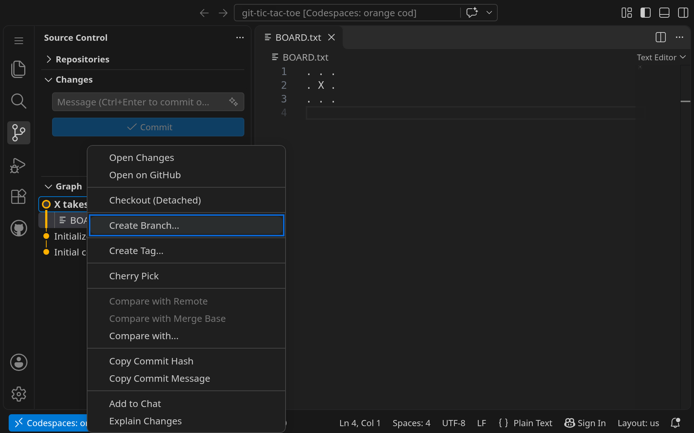
Type what-if-01 as the new branch name and press Enter.
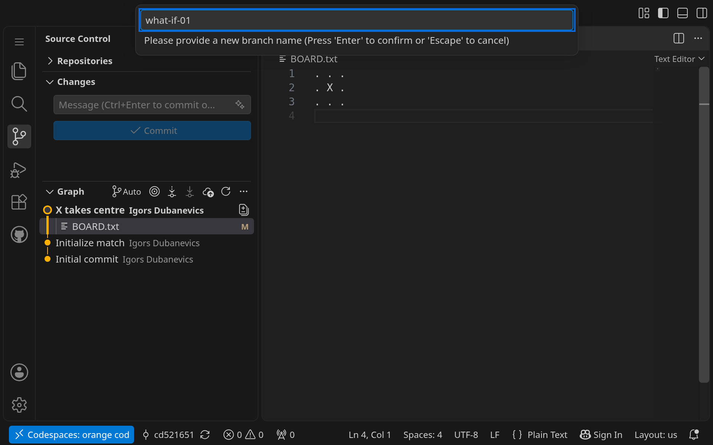
On what-if-01, replace one dot with a different legal move and save. Here, O is in the top-right cell.
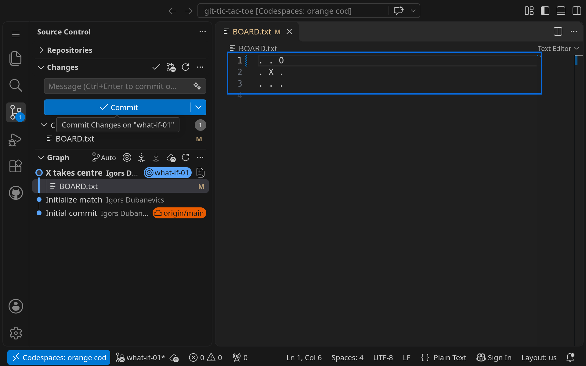
With BOARD.txt staged, enter “O takes top-right (what-if)” and select Commit.
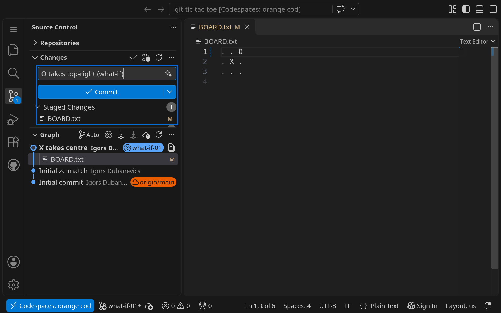
Click Publish Branch to save what-if-01 on GitHub.
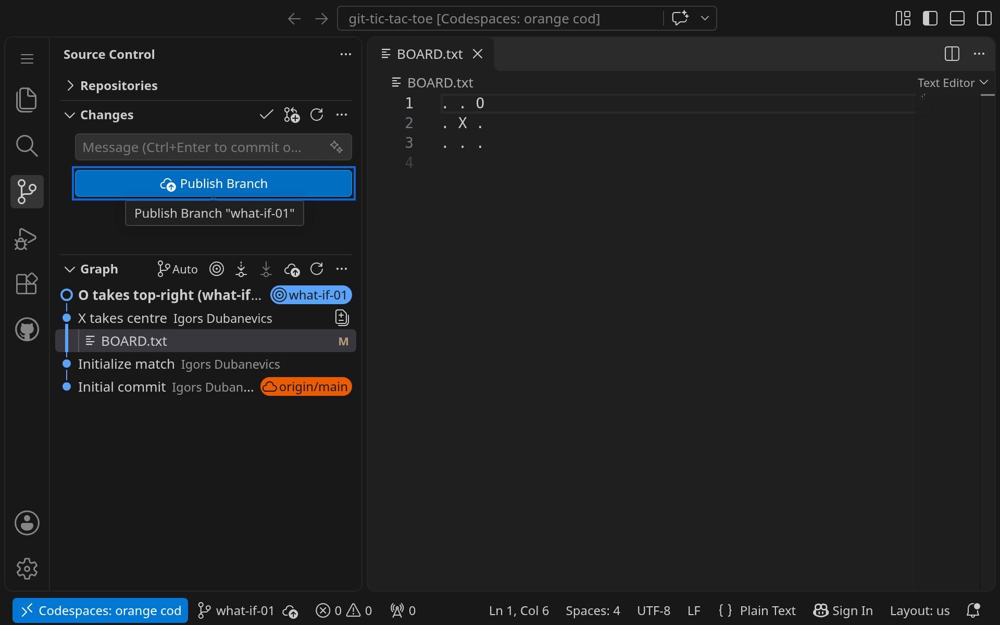
Never merge an experiment branch into main or into a match branch. Keep it as a separate record of the what-if.
Return to your match
Click the branch name in the status bar and choose your match branch (match). Your board shows the original game again. Your experiment stays on its own branch, and you can switch back to it any time.
The status bar shows match again.
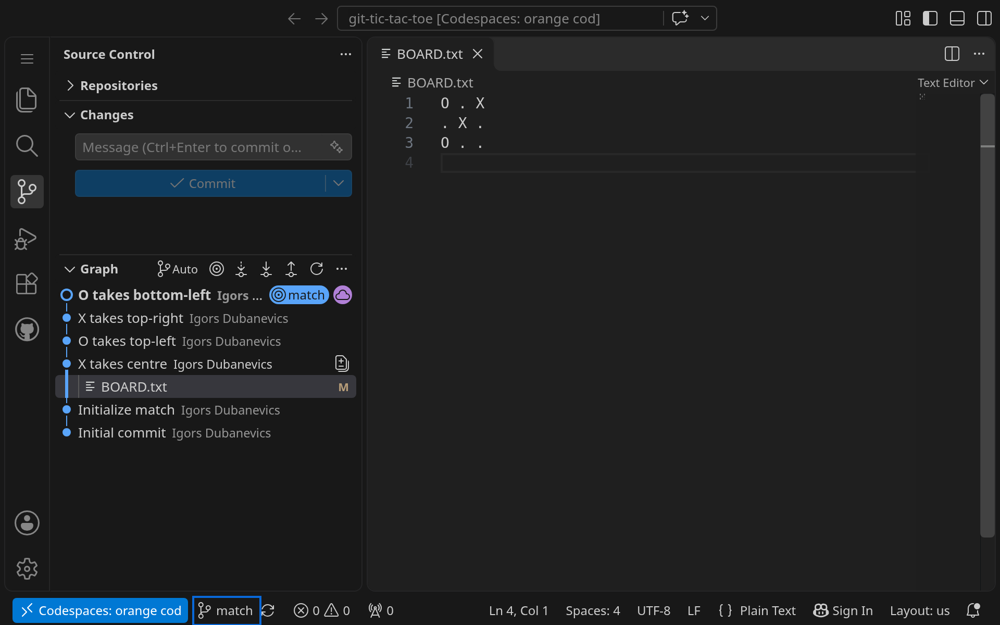
Terminal equivalent
Optional: the same steps in the terminal
git log --oneline # list commits, newest first
git diff abc1234 HEAD # compare an old commit with now
git switch --detach abc1234 # look at the old board (detached HEAD)
git switch match # leave detached HEAD, return to the match
git switch -c what-if-01 abc1234 # new branch from a past commit
git push -u origin what-if-01 # publish itReplace abc1234 with a commit code from git log --oneline.